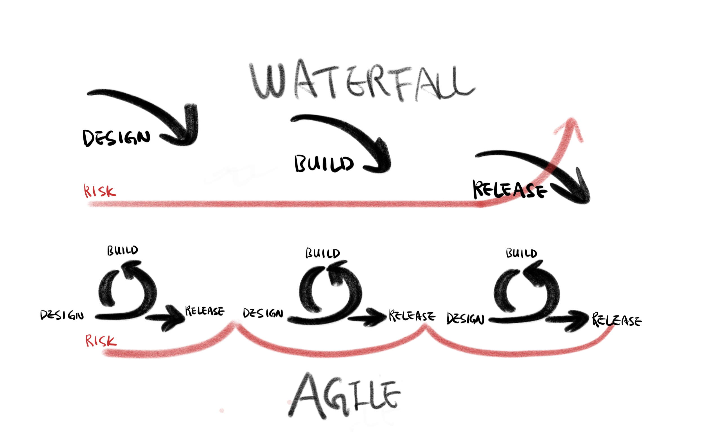
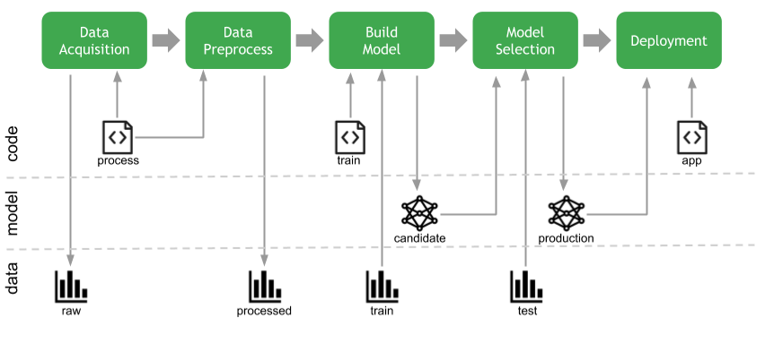
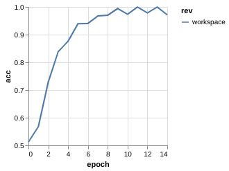
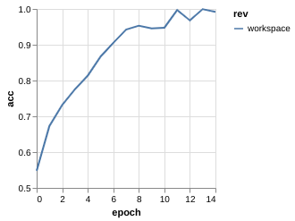
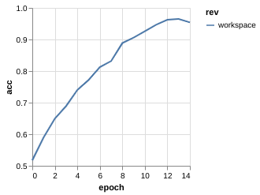
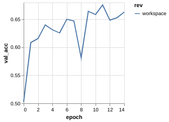
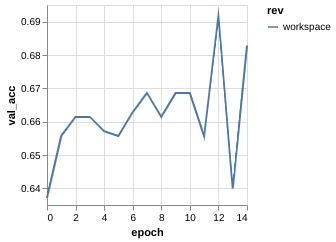
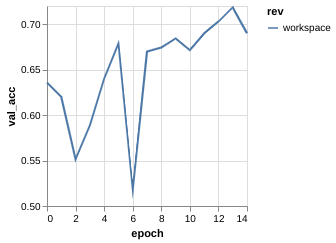

Automating
Machine Learning Workflow
with DVC
About Me
Machine Learning Engineer @
SK Hynix Data ScienceRecent Work Interest
Knowledge Graph Supply Chain Management Mining Software RepositoryAgenda
- Software Developers vs ML Developers
- ML Workflow and DVC
- Walkthrough example (Cats vs Dogs)
Waterfall to Agile
Software Dev. LifeCycle
- code : git
- build : sbt, maven
- test : jUnit
- release : Jenkins
- deploy : docker, AWS
- operate : Kubernetes
- monitor : ELK stack
Machine Learning Dev. LifeCycle
- Data Acquisition
- Data Preprocessing
- Build Model
- Evaluation & Model Selection
- Deployment
Machine Learning Workflow
Challenging issues in ML workflow
Machine Learning is not Software Engineering
- Versioning data along with code
- Deploy a Model (not a code)
- Metric Driven Deployment
Versioning data along with code
$ tree data
data
├── raw_data.csv
├── cleaned_data.csv
├── cleaned_data_final.csv
├── cleaned_data_preprocessed_final.csv
└── cleaned_data_preprocessed_final.csv.bak
- Data version hell
- Data shared for team sports
- Data triggers a pipeline (AWA Code)
- ML model must be versioned and tracked
Metric Driven Development
- Developing software matters features
- Developing Machine Learning matters metrics
- Metrics must be tracked
DVC helps to handle these challenges.
- Easy to use
- Language independent
- Useful to an individual to a large team
Cats vs Dogs Classification
The example project (github.com/midnightradio/handson-dvc) trains a small VGGNet to classify cat and dog images.
Follow the instruction in the repository to build a docker image and containerize the image with running bash shell. Following commands should be run inside the docker container
project structure
$ cd cats_and_dogs
$ tree
.
├── data
│ ├── finalized
│ ├── processed
│ └── raw
├── environment.sh
├── notebooks
├── requirements.txt
├── scripts
│ ├── dataload.sh
│ └── deploy.sh
└── src
├── catdog
└── setup.py
Initialize repository
$ git init
$ git add src
$ git commit -m 'initialize repository'
$ dvc init
$ git status
new file: .dvc/.gitignore
new file: .dvc/config
new file: .dvc/plots/confusion.json
new file: .dvc/plots/default.json
new file: .dvc/plots/scatter.json
new file: .dvc/plots/smooth.json
$ git add .dvc
$ git commit -m 'initialize dvc'
Download data
It's pretty large dataset containing 25K images in total, half cats and half dogs.
$ scripts/dataload.sh
$ ls /tmp/PetImages
Cat Dog
Setup parameters
$ cat << EOF > params.yaml
> data:
> raw: "/tmp/PetImages"
> processed: "data/processed"
>
> prep:
> split_rate: 0.9
> class_size: 2000
>
> train:
> learning_rate: 0.001
> batch_size: 100
> epochs: 15
> validation_rate: 0.2
> EOF
$ git add params.yaml
$ git commit -m "add parameters"
Define data prepare stage
$ dvc run -n prep -p prep -d src/catdog/preprocess.py \
-o data/processed python -m catdog.preprocess
$ git status
data/
dvc.lock
dvc.yaml
$ cat data/.gitignore
/processed
$ git add dvc.yaml dvc.lock data
$ git commit -m "define prep stage"
Define train / evaluate stage (ver. 0.1)
Train and evaluate first VGGNet with One Convolutional layer and One Fully Connected layer
$ dvc run -n train -p train -d data/processed/ \
-d src/catdog/train.py -o data/model.h5 --plots-no-cache \
data/plot.json python -m catdog.train
......
$ dvc run -n evaluate -d data/model.h5 -d src/catdog/evaluate.py \
-m data/score.json python -m catdog.evaluate
......
$ git status
modified: data/.gitignore
modified: dvc.lock
modified: dvc.yaml
modified: src/catdog/train.py
$ cat data/.gitignore
/processed
/model.h5
/score.json
$ git add data/ dvc.lock dvc.yaml src/catdog/train.py
$ git commit -m '1 Conv, 1 FC'
$ git tag -a 0.1 -m "ver 0.1, 1 Conv, 1 FC"
Pipeline Dependency of defined stages
$ dvc dag
+------+
| prep |
+------+
*
*
*
+-------+
| train |
+-------+
*
*
*
+----------+
| evaluate |
+----------+
Reproducing Experiment
`dvc repro` checks any changes in dependencies and automatically runs the pipeline from the first stage where a change happened
$ dvc repro
Stage 'prep' didn't change, skipping
Stage 'train' didn't change, skipping
Stage 'evaluate' didn't change, skipping
Data and pipelines are up to date.
Reproducing Experiment (ver. 0.2)
Add another Convolutional layer and reproduce affected stages
model = keras.Sequential([
layers.Conv2D(16, (3, 3), activation='relu', input_shape=(224, 224, 3)),
layers.MaxPooling2D(2, 2),
layers.Conv2D(32, (3, 3), activation='relu'),
layers.MaxPooling2D(2, 2),
layers.Flatten(),
layers.Dense(512, activation='relu'),
layers.Dense(1, activation='sigmoid')
])
Reproducing Experiment (ver. 0.2)
Add another Convolutional layer and reproduce affected stages
$ dvc repro
......
$ git add data dvc.lock src/catdog/train.py
$ git commit -m '2 Conv, 1 FC'
$ git tag -a 0.2 -m "ver. 0.2 , 2Conv, 1FC"
Reproducing Experiment (ver. 0.3)
Add third Convolutional layer and reproduce affected stages
model = keras.Sequential([
layers.Conv2D(16, (3, 3), activation='relu', input_shape=(224, 224, 3)),
layers.MaxPooling2D(2, 2),
layers.Conv2D(32, (3, 3), activation='relu'),
layers.MaxPooling2D(2, 2),
layers.Conv2D(64, (3, 3), activation='relu'),
layers.MaxPooling2D(2, 2),
layers.Flatten(),
layers.Dense(512, activation='relu'),
layers.Dense(1, activation='sigmoid')
])
Reproducing Experiment (ver. 0.3)
Add third Convolutional layer and reproduce affected stages
$ dvc repro
......
$ git add data dvc.lock src/catdog/train.py
$ git commit -m '3 Conv, 1 FC'
$ git tag -a 0.3 -m "ver. 0.3 , 3Conv, 1FC"
Compare metrics for each version
Regarding to the accuracy, just adding Conv layers seems not helping the result.
$ dvc metrics show -T
workspace:
data/score.json:
acc: 0.675000011920929
0.1:
data/score.json:
acc: 0.6924999952316284
0.2:
data/score.json:
acc: 0.7124999761581421
0.3:
data/score.json:
acc: 0.675000011920929
Metric Driven Development
The training process for each experiment tell something
| v0.1 | v0.2 | v0.3 | |
|---|---|---|---|
| ACC |  |  |  |
| Val. ACC |  |  |  |
Metric Driven Development (Overfitting)
Clear sign of overfitting --> Regularization
model = keras.Sequential([
layers.Conv2D(16, (3, 3), activation='relu', input_shape=(224, 224, 3)),
layers.MaxPooling2D(2, 2),
layers.Conv2D(32, (3, 3), activation='relu'),
layers.MaxPooling2D(2, 2),
layers.Conv2D(64, (3, 3), activation='relu'),
layers.MaxPooling2D(2, 2),
layers.Flatten(),
layers.Dense(512, activation='relu'),
layers.Dropout(0.5),
layers.Dense(1, activation='sigmoid')
])
Metric Driven Development (Dropout)
$ dvc repro
$ git add dvc.lock src/catdog/train.py data/plot.json
$ git commit -m '3 Conv, 1 FC, Dropout added'
$ tag -a 0.4 -m "ver. 0.4, 3Conv, 1FC, Dropout(0.5)"
Metric Driven Development (Data Augmentation)
Rather than increasing size of data, try data augmentation technique
$ git checkout -b data_augmentation 0.3
training_datagen = ImageDataGenerator(validation_split=validation_rate,
rescale=1.0/255.,
shear_range=0.2,
zoom_range=0.2,
horizontal_flip=True)